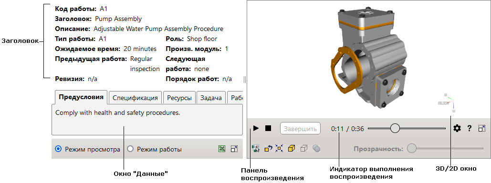

Текст, который содержит гиперссылку на 2D-иллюстрацию, подчеркнут пунктирной линией (например,
Рабочие инструкции могут использоваться в двух режимах:
Интерфейс пользователя состоит из двух рабочих областей: окно «Данные» и 3D/2D-окно. Каждая из рабочих областей имеет свой собственный набор инструментов, описанных далее.
Для доступа к данной справке щелкните кнопку «Справка» в нижнем правом углу.
|  |
Окно «Данные» содержит раздел «Заголовок» и следующие вкладки: Предусловия, Спецификация, Ресурсы, Инструкции и Документ.
Раздел «Заголовок» содержит общую информацию о рабочей инструкции, например, код работы, тип работы, ожидаемое время.
Вкладка «Предусловия» отображает список условий, которые необходимо выполнить перед началом технической процедуры. Данная вкладка активируется непосредственно после открытия публикации.
Вкладка «Спецификация» отображает многоуровневый список деталей. Каждая запись спецификации содержит следующую информацию о детали: обозначение, наименование, количество, альтернативное обозначение.
Щелчок по записи спецификации устанавливает вид таким образом, чтобы объекты были достаточно близко и целиком умещались в 3D-окне, а также выделяет объекты.
Наведение указателя на запись спецификации приводит к подсвечиванию записи и соответствующих объектов в 3D-окне.
Щелчок по значку «плюс» в списке деталей раскрывает текущий элемент в иерархии. Щелчок по значку «минус» сворачивает иерархическую группу.
Вкладка «Ресурсы» описывает ресурсы, необходимые для выполнения технической процедуры.
Вкладка «Инструкции» состоит из следующих секций: «Текущая задача», «Необходимые детали», «Необходимые ресурсы». Секция «Текущая задача» отображает текст текущей задачи.
Текст на вкладке может содержать гиперссылки на 3D-объекты и 2D-иллюстрации.
Текст, который содержит гиперссылку на 3D-объект, подчеркнут штриховой линией.
Щелчок по такой ссылке приводит к подсветке объектов в 3D-окне и подгонки объектов к размеру 3D-окна.
Текст, который содержит гиперссылку на 2D-иллюстрацию, подчеркнут пунктирной линией
(например, ).
Щелчок по такой линии открывает 2D-иллюстрацию в 2D-окне.
).
Щелчок по такой линии открывает 2D-иллюстрацию в 2D-окне.
Секция «Необходимые детали» отображает спецификацию, относящуюся только к тем деталям, которые имеют ссылки на соответствующие 3D-объекты.
Секция «Необходимые ресурсы» отображает ресурсы, необходимые для выполнения текущей задачи.
Вкладка «Документ» предоставляет полный текст процедуры.
В режиме задачи щелкните кнопку «Завершить», чтобы осуществить переход к следующей задаче технической процедуры. Верхняя строка на вкладке «Документ» показывает время и дату, когда была применена команда «Завершить» для текущей задачи (например, Завершено: 15 ноября 2011 г. 16:40:53). Дата и время показываются только в течение текущей сессии, поскольку эти данные нигде не сохраняются.
Во время проигрывания процедуры может показываться диалоговое окно «Требуется осмотр». Текстовая строка соответствующей задачи показывает время и дату, когда щелкнули кнопку «Закрыть» в диалоговом окне (например, Осмотрено: 15 ноября 2011 г. 16:40:53). Дата и время показываются только в течение текущей сессии, поскольку эти данные нигде не сохраняются.
В режиме просмотра щелчок по пункту процедуры приводит к его подсветке и проигрыванию соответствующей анимации в 3D-окне.
Текст документа может содержать гиперссылки на 3D-объекты и 2D-иллюстрации (см. описание вкладки «Инструкции»).
Содержит кнопки для управления воспроизведением процедуры в 3D-окне.
| Команда | Назначение |
|---|---|
| Воспроизведение | Включает проигрывание процедуры, если до момента включения процедура была остановлена. |
| Пауза | Останавливает проигрывание на текущем моменте процедуры. |
| Стоп | Останавливает проигрывание и устанавливает процедуру к началу. |
| Завершить |
Команда активна в режиме задачи. Запускает выполнение следующей по порядку задачи. Активная задача подсвечивается на вкладке «Документ», а соответствующая часть задачи проигрывается в 3D-окне. В тексте предыдущей задачи на вкладке «Документ» отмечается дата и время, когда была нажата кнопка «Завершить». |
|
Настройки |
Показывает или скрывает список настроек. Скорость. Позволяет задать скорость проигрывания – выбирается коэффициент, на который будет умножена стандартная скорость проигрывания. Зафиксировать вид. Если выбрано, текущий вид в 3D-окне фиксируется и перемещение камеры в пространстве блокируется во время проигрывания процедуры. Отключить предупреждения. Если выбрано, блокирует показ предупреждающих сообщений во время проигрывания. PMI. Если выбрано, разрешает показ PMI-данных. Производственная информация о продукции (Product Manufacturing Information – PMI) представляет негеометрические атрибуты в компьютерном моделировании, необходимые для производства компонентов изделия и его подсистем. Режим выделения объектов. Задает представление объектов, выделенных в трехмерном окне. Выделять цветом – цвет выделенного объекта изменяется. Прозрачность X-ray – цвет выделенного объекта изменяется, а все остальные объекты отображаются полупрозрачными с различной степенью затенения. Прозрачная оболочка – цвет выделенного объекта изменяется, оболочка изделия или сборки отображаются полупрозрачной, невыбранные внутренние объекты скрываются. Отображать контур объекта при наведении. Отображается контур выделенного объекта. |
Отслеживает ход воспроизведения процедуры. Щелкните на индикаторе, чтобы выбрать требуемый момент процедуры.
Позволяет совершать различные действия с выделенными объектами в 3D-окне.
| Элемент интерфейса пользователя | Назначение |
|---|---|
| Игнорировать прозрачность | Если включено, делает прозрачные объекты нечувствительными к щелчку мыши в 3D-окне, что позволяет щелкать сквозь прозрачные объекты по объектам, которые находятся за прозрачными объектами. |
| Восстановить все объекты | Восстанавливает первоначальный вид для всех скрытых и полупрозрачных объектов. |
| Подогнать | Устанавливает вид таким образом, чтобы выделенный объект был достаточно близко и целиком умещался в 3D-окне. |
| Показать | Показывает выделенные объекты, которые были предварительно скрыты в 3D-окне. |
| Скрыть | Скрывает выделенные объекты в 3D-окне. |
| Снять выделение | Снимает выделение со всех объектов. |
| Прозрачность | Позволяет задать прозрачность для выделенных объектов. Команда установки прозрачности становится доступной, если в 3D-окне выделены объекты. |
| Операция | Действие пользователя |
|---|---|
| Масштабировать | Вращайте колесо мыши вперед или назад. На компьютерах Apple используйте модификатор Control. |
| Переместить | Перемещайте мышь, удерживая колесо мыши. На компьютерах Apple используйте модификатор Option. |
| Вращать | Перемещайте мышь, удерживая левую кнопку. |
| Установить центр вращения | Удерживая клавишу ALT, щелкните объект в 3D-окне. Центр вращения устанавливается в центр габаритной рамки выбранного объекта. |
Для доступа к меню, щелкните правой кнопкой мыши в 3D-окне.
| Команда | Назначение |
|---|---|
| Восстановить | Возвращает камеру в трехмерном окне к положению, заданному текущим шагом процедуры. |
| Подогнать | Устанавливает вид, при котором все объекты видны в трехмерном окне. |
| О программе | Показывает номер версии интерактивного документа и программ просмотра 2D- и 3D-иллюстраций. |
2D-окно показывает векторные и растровые изображения, соответствующие технической процедуре, описанной в окне «Данные».
2D-окно замещает 3D-окно после щелчка по гиперссылке на 2D-иллюстрацию в окне «Данные» (вкладки «Инструкции» или «Документ»).
Для доступа к контекстному меню, щелкните правой кнопкой мыши в 2D-окне. Набор контекстных команд зависит от программы просмотра, которая используется в 2D-окне.
| Операция | Действие пользователя |
|---|---|
| Переместить | Перемещайте мышь, удерживая левую кнопку. |
| Масштабировать | Вращайте колесо мыши вперед или назад. |
| Справка |

|
Вызов текущей справки. |
| 3D |

|
Открывает 3D-окно. |